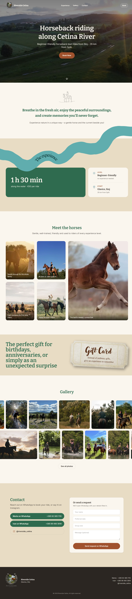

Horseback riding tours along the Cetina river near Split — a cinematic, booking-focused page built around drone visuals.
Visit site ↗Summary
Riverside Cetina is a marketing site for beginner-friendly horseback riding along the Cetina river in Sinj. A full-screen drone loop opens the page, then a single anchored scroll walks through the ride, the horses, and the river trail before landing on booking.
No CMS, no dashboard — the whole thing is content components and a booking button, sized to what a two-person tour operator actually needs on day one.
Tech Stack
Details
Learning Experience
The build order mattered more than any individual component: ship the hero and a working booking button first, prove the deploy pipeline, then layer in the horses, trail, and gallery — rather than polishing sections that don't yet have a live URL behind them.
Staging the booking flow (WhatsApp now, Cal.com if it gets busy, Supabase + Stripe only if it outgrows that) was the clearest lesson in not over-building ahead of real demand.